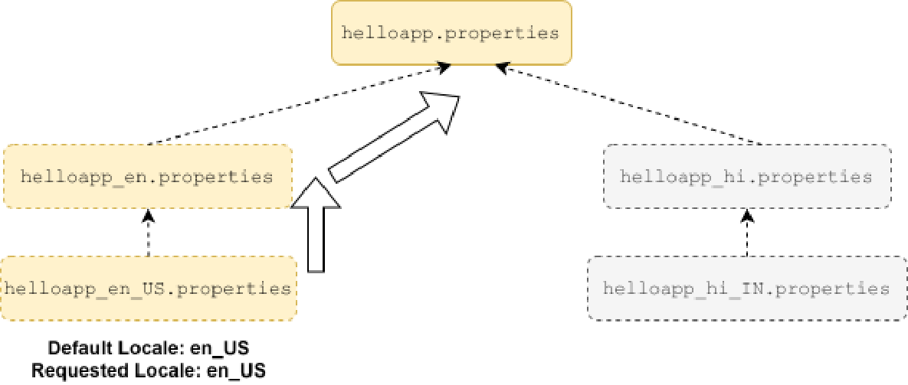

similar fashion. Thus, it will look for helloapp_en.properties to create the
helloapp_en bundle. Similarly, since the parent of helloapp_en is helloapp,
helloapp.properties will also be loaded.
If, while creating the hierarchy of the resource bundles, at any stage, the getBundle method is
not able to find the matching properties file, it tries to create the parent bundle of the requested
bundle and returns that parent bundle instead. So, if helloapp_hi_IN.properties is not
available, getBundle("helloapp", Locale.of("hi", "IN")) method will try to create the
parent bundle, i.e., helloapp_hi as per the process described above and return this bundle
instead.
Effectively, the call to getBundle causes the creation of the hierarchy from the requested
bundle up to the base bundle (but not the children or siblings) using properties files. The
following image illustrates the search path that getBundle takes in this example:

Requesting a resource bundle for the non-default locale
The process for creating a requested bundle for a non-default locale is almost the same as above.
The only difference is that when getBundle is not able to find any locale specific properties
file, it doesn't immediately return the base resource bundle. Before returning the base bundle, it
tries to find and return the bundle for the default